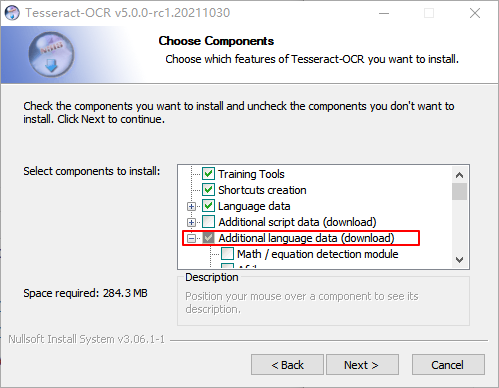
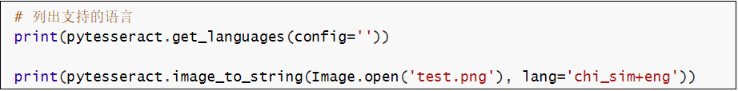
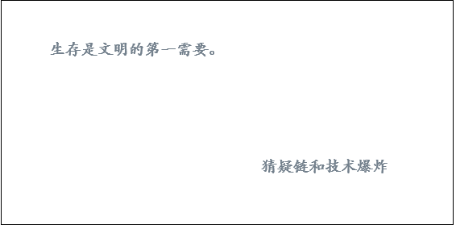
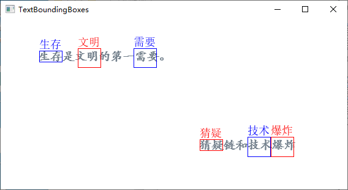
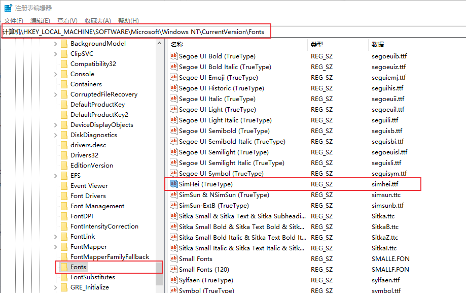
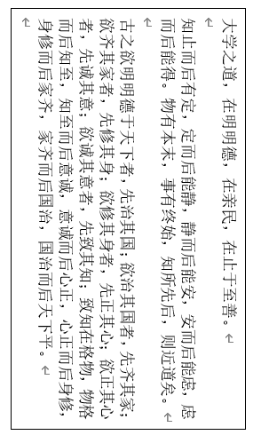
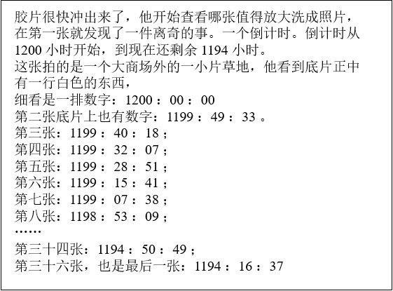

pytesseract是基于Python的OCR工具， 底层使用的是Google的Tesseract-OCR 引擎，支持识别图片中的文字，支持jpeg, png, gif, bmp, tiff等图片格式。本文介绍如何使用pytesseract 实现图片文字识别。
引言
OCR（Optical character recognition，光学字符识别）是一种将图像中的手写字或者印刷文本转换为机器编码文本的技术。通过数字方式存储文本数据更容易保存和编辑，可以存储大量数据，比如1G的硬盘可以存储数百万本书。
OCR技术可以将图片，纸质文档中的文本转换为数字形式的文本。OCR过程一般包括以下步骤：
- 图像预处理
- 文本定位
- 字符分割
- 字符识别
- 后处理
最初由惠普开发，后来Google赞助的开源OCR引擎 tesseract 提供了比较精确的文字识别API，支持100多种语言，本文将要介绍的Python库Pytesseract就是基于Tesseract-OCR 引擎。
环境配置
环境要求：
- Python 3.6+
- PIL库
- 安装Google Tesseract OCR
- 系统：windows/mac/linux，我的系统是Windows10
1. 安装Google Tesseract
Tesseract OCR github地址：https://github.com/tesseract-ocr/tesseract
Windows Tesseract下载地址：https://digi.bib.uni-mannheim.de/tesseract/
Mac和Linux安装方法参考：https://tesseract-ocr.github.io/tessdoc/Installation.html
安装时可以选择需要的语言包：

安装完成后，添加到环境变量PATH中，我的安装路径是：C:\Program Files\Tesseract-OCR 。
命令行窗口输入：tesseract ，查看是否安装成功。
1 | $ tesseract |
2. 安装pytesseract
Python tesseract：https://github.com/madmaze/pytesseract
pip安装pytesseract
1 | pip install pytesseract |
另外需要安装一下Pillow库，用于图像处理。
1 | pip install Pillow |
文字识别小例子
先准备一张包含英文字符的图片，下面的代码实现提取图片中的中文和英文字符，并识别为字符串：
1 | import pytesseract |
识别下面图片中的文字（test.png）：

执行结果：
1 | ['chi_sim', 'eng', 'osd'] |
获取文字位置信息
image_to_boxes() 方法返回识别到的字符及字符边框信息。image_to_data() 返回单词及单词位置信息。下面来看看这两种方法的执行效果，识别下图中的中文字符：

1 | img = Image.open('testimg2.png') |
执行结果：
1 | 生 63 211 80 227 0 |
根据image_to_data() 方法返回的位置信息，下面来标出识别出的词语位置。
1 | import numpy as np |
执行结果：

另外说明一下， ImageFont.truetype(font="simsun.ttc", size=18, encoding="utf-8") 用于设置字体及编码格式，原因是draw.text() 默认使用ISO-8859-1（latin-1）编码，中文需要使用UTF-8编码。Windows中，字体存放路径一般为C:\Windows\Fonts ，已经添加到了环境变量，直接写字体名称就可以了，simsun.ttc 表示宋体。
如果不知道字体对应名称可以进入注册表查看：运行窗口或者命令行窗口输入regedit打开注册表，进入如下路径：HKEY_LOCAL_MACHINE\SOFTWARE\Microsoft\Windows NT\CurrentVersion\Fonts ，可以查看对应字体文件名称。

多语言识别
使用方法
图片中可能包含了多种语言，比如在上面的例子中，图片包含了中文和英文，lang='chi_sim+eng' 表示识别简体中文和英文。
简体中文chi_sim是在安装tesseract时勾选的，get_languages() 方法列出了支持的语言，也可以在命令行窗口执行 tesseract --list-langs 查看支持的语言：
1 | $ tesseract --list-langs |
或者查看官方文档：https://tesseract-ocr.github.io/tessdoc/Data-Files-in-different-versions.html
除了使用 lang='chi_sim+eng' 方式指定语言外，也可以使用config='-l chi_sim+eng' 形式：
1 | img = Image.open('test.png') |
执行结果和前面一样。
训练数据
如果需要下载其它语言包，可以到这里https://tesseract-ocr.github.io/tessdoc/Data-Files下载。
Tesseract 提供了三种训练数据：
| 训练数据 | 训练模型 | 识别速度 | 正确率 |
|---|---|---|---|
| tessdata_fast | LSTM | 最快 | 最低 |
| tessdata_best | LSTM | 最慢 | 最高 |
| tessdata | Legacy + LSTM | 中等 | 略低于tesdata -best |
根据自己的需要下载需要的模型文件，将traineddata文件放在 C:\Program Files\Tesseract-OCR\tessdata 目录（Tesseract安装目录）下就可以了。
tessdata_best可用来再训练字库，训练方法参考文档：https://tesseract-ocr.github.io/tessdoc/tess4/TrainingTesseract-4.00.html。
OCR选项
多语言识别中使用了 -l 和 --psm 选项，tesseract还支持更多的OCR选项。
OCR选项：
--tessdata-dir PATH：Specify the location of tessdata path.--user-words PATH：Specify the location of user words file.--user-patterns PATH：Specify the location of user patterns file.--dpi VALUE：Specify DPI for input image.-l LANG[+LANG]：Specify language(s) used for OCR.-c VAR=VALUE：Set value for config variables. Multiple -c arguments are allowed.--psm NUM：Specify page segmentation mode.--oem NUM：Specify OCR Engine mode.
在pytesseract中的使用方法是添加config参数：config='--psm 0 -c min_characters_to_try=5'
下面介绍一下psm和oem这两个选项。
图片分割模式（PSM）
tesseract有13种图片分割模式（page segmentation mode，psm）：
- 0 — Orientation and script detection (OSD) only. 方向及语言检测（Orientation and script detection，OSD)
- 1 — Automatic page segmentation with OSD. 自动图片分割
- 2 — Automatic page segmentation, but no OSD, or OCR. 自动图片分割，没有OSD和OCR
- 3 — Fully automatic page segmentation, but no OSD. (Default) 完全的自动图片分割，没有OSD
- 4 — Assume a single column of text of variable sizes. 假设有一列不同大小的文本
- 5 — Assume a single uniform block of vertically aligned text. 假设有一个垂直对齐的文本块
- 6 — Assume a single uniform block of text. 假设有一个对齐的文本块
- 7 — Treat the image as a single text line. 图片为单行文本
- 8 — Treat the image as a single word. 图片为单词
- 9 — Treat the image as a single word in a circle. 图片为圆形的单词
- 10 — Treat the image as a single character. 图片为单个字符
- 11 — Sparse text. Find as much text as possible in no particular order. 稀疏文本。查找尽可能多的文本，没有特定的顺序。
- 12 — Sparse text with OSD. OSD稀疏文本
- 13 — Raw line. Treat the image as a single text line, bypassing hacks that are Tesseract-specific. 原始行。将图像视为单个文本行。
OCR引擎模式（OEM）
有4种OCR引擎模式：
- 0 — Legacy engine only.
- 1 — Neural nets LSTM engine only.
- 2 — Legacy + LSTM engines.
- 3 — Default, based on what is available.
方向及语言检测OSD
Tesseract支持方向及语言检测（Orientation and script detection，OSD) ，比如检测下面的图片：

1 | osd = pytesseract.image_to_osd('osd-example.png',config='--psm 0 -c min_characters_to_try=5') |
其中 min_characters_to_try 表示设置最小字符数，默认为50。
执行结果：
1 | Page number: 0 |
结果是旋转了270度，识别到的语言为中文Han。
提取数字
只提取下面图片中的数字：

1 | img = Image.open('number-example.png') |
执行结果：
1 | 1200-.41194-. |
字符白名单
只检测特定的字符：只检测数字
1 | img = Image.open('number-example.png') |
执行结果：
1 | 12001194 |
发现识别精度比 outputbase digits 方法更加准确。
字符黑名单
不检测数字：
1 | img = Image.open('number-example.png') |
执行结果：
1 | 胶片很快冲出来了，他开始查看哪张值得放大洗成照片， |
格式转换
pytesseract 支持将图片转换为PDF、HOCR以及ALTO XML格式。
1 | pdf = pytesseract.image_to_pdf_or_hocr('testimg2.png', extension='pdf') |
世人多巧, 心茫茫然
参考资料：
- https://nanonets.com/blog/ocr-with-tesseract/#limitationsoftesseract
- https://tesseract-ocr.github.io/tessdoc/tess4/TrainingTesseract-4.00.html
- Tesseract文档：https://tesseract-ocr.github.io/
本文标题:Python OCR工具pytesseract详解
文章作者:hiyo
文章链接:https://hiyongz.github.io/posts/python-notes-for-ocr-with-tesseract/
许可协议:本博客文章除特别声明外，均采用CC BY-NC-ND 4.0 许可协议。转载请保留原文链接及作者。